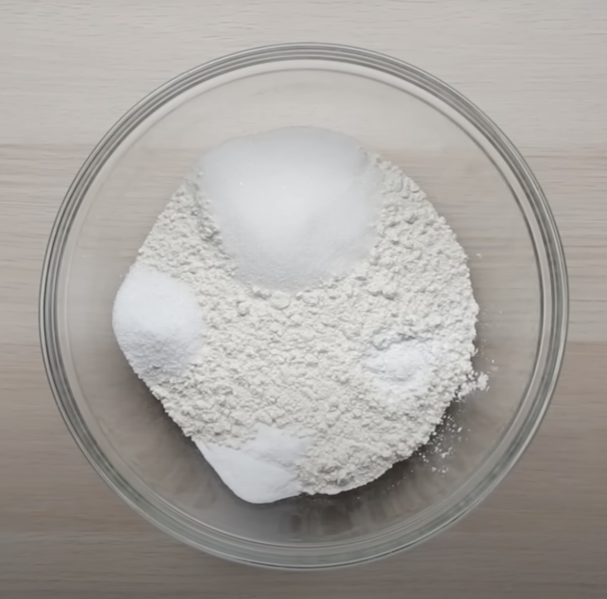
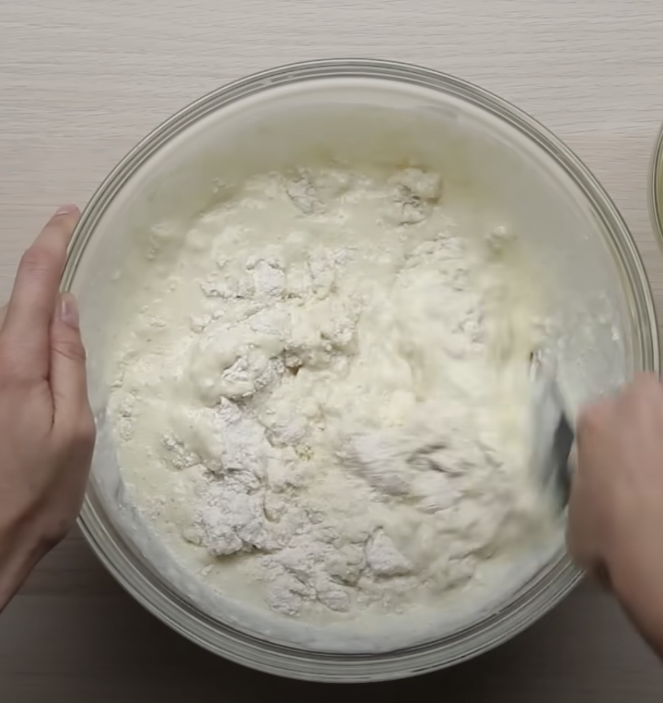
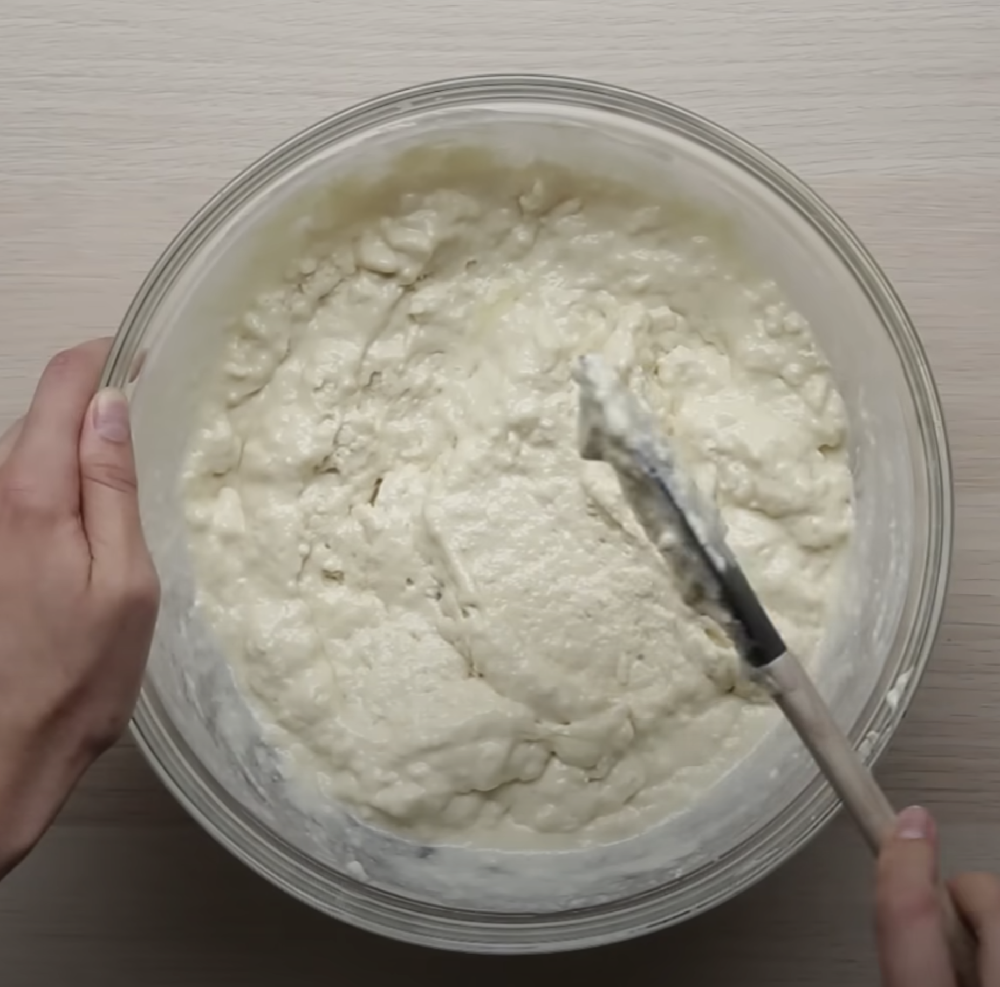
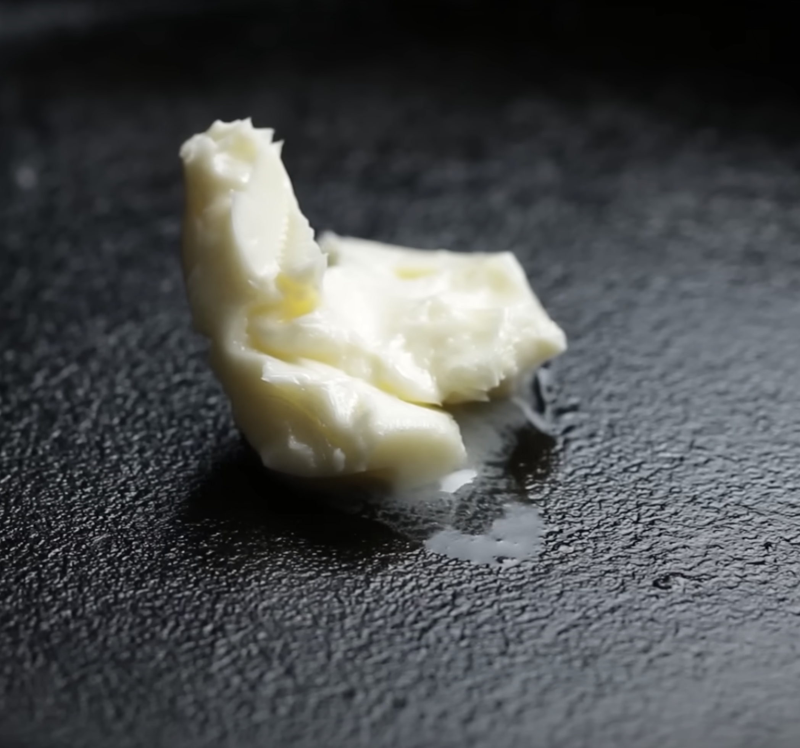
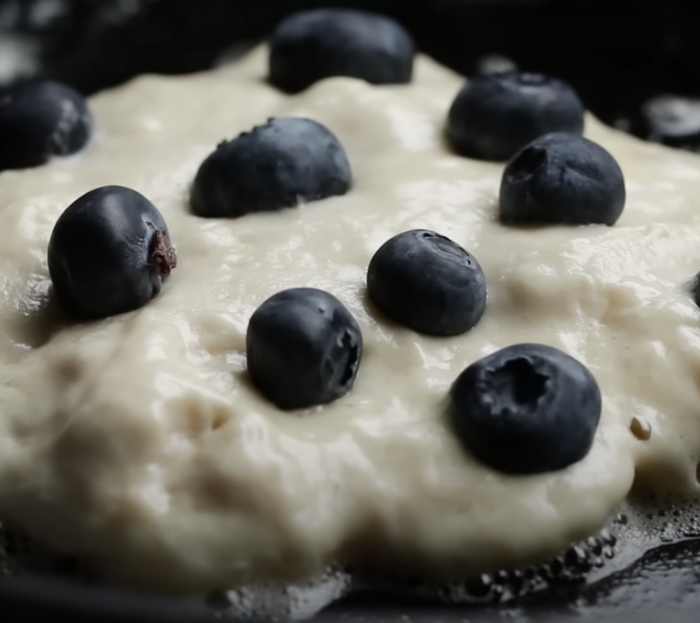
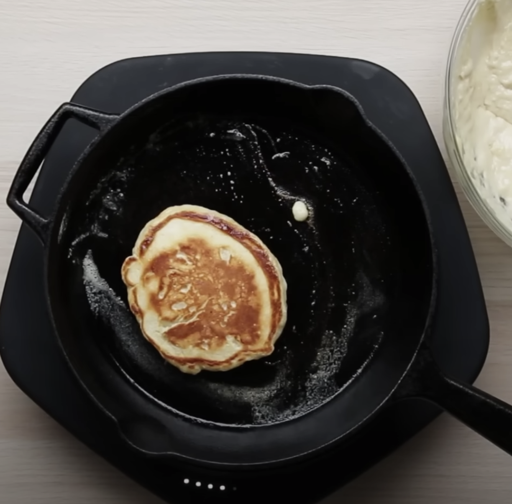
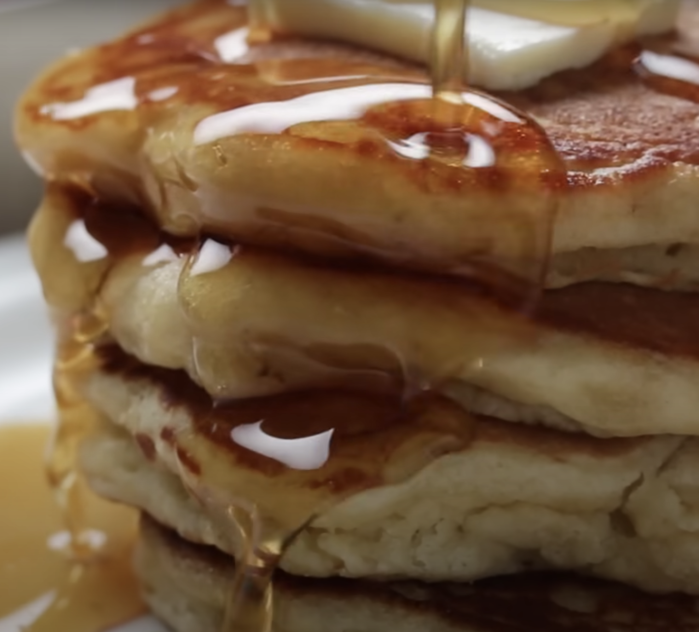

Prep
5 mins
Bake
5 mins
Total
15 mins
Yield
1 dozen 5" pancakes, 6 servings
Nutritional Information
Serving Size: 1 pancake
Servings per batch: 12 pancakes
Amount per Serving:
- Calories: 115kcal
- Total Fat: 4g
- Saturated Fat: 2g
- Trans Fat: 0g
- Cholesterol: 40mg
- Sodium: 242mg
- Total Carbohydrate: 16g
- Dietary Fiber: 1g
- Total Sugars: 4g
- Protein: 4g
Ingredients
contains dairy and eggs.
- 2 large eggs
- 1 cup (227g) milk
- 2 teaspoons vanilla extract, optional
- 3 tablespooons (43g) melted butter or 3 tablespoons (35g) vegetable oil
- 1 1/2 cups (180g) all-purpose flour
- 3/4 teaspoon salt
- 2 teaspoons baking powder
- 2 tablespoons (25g) granulated sugar
- 3/4 cup (85g) blueberries, fresh or frozen
Equipments
- a griddle or a large frying pan
- stand or hand mixer
- baking sifter
Instructions
-
1.
Beat the eggs, milk, and vanilla in a small bowl until light and foamy, about 3 minutes at high speed of a stand or hand mixer. Stir in the melted butter or oil.
-

2.
Sift the flour, baking powder, sugar, and salt together in a large bowl. Mix well together.
-

3.
Pour the egg mixture(step 2) into flour mixture(step 3). Stir it just to combine. A few lumps are OK.
-

4.
Set the batter aside to rest for a couple of minutes; it'll thicken a bit as it stands. Thin the batter with additional milk if it's not pourable consistency.
-

5.
While the batter is resting, heat a griddle to 350°F. If you don't have a griddle, heat a large frying pan over medium-low to medium heat. Grease the griddle. When it's hot enough, a drop of water will skitter across the surface, evaporating immediately.
-

6.
Drop the batter by 1/4 cupfuls onto the hot griddle or pan; a muffin scoop works well here. Sprinkle 1 tablespoon berries atop each pancake.
-

7.
Cook the cakes till they're golden brown on the bottom, about 2 minutes. Flip them over, and cook till the other side is golden, 2 to 2 1/2 minutes.
-

8.
Serve the pancakes immediately. Or transfer them to a platter, cover, and keep warm in a 200°F oven. Enjoy with butter and maple syrup.
Tips
- What kind of milk should you use in this recipe: skim, whole, or something in between?
It's up to you; skim milk will yield the least tender pancake, whole milk the most tender. - Whole flour is recommended, but for gluten-free options, use almond flour, oat flour or alternative types of gluten-free flours.
- If you use fresh berries, mix them right into the batter. If you use frozen berries, it's better to scatter them atop the cooking pancakes. If you mix them into the batter, they'll tint your pancakes a rather unappetizing shade of green.
- Why is it helpful to let pancake batter rest before cooking the pancakes?
Because it gives the baking powder a chance to start working, and the flour time to start absorbing the liquid, both of which make for fluffier pancakes. - For pancakes with deep blueberry flavor and rich color, substitute ¼ cup (30g) blueberry powder for ¼ cup (28g) of the flour.